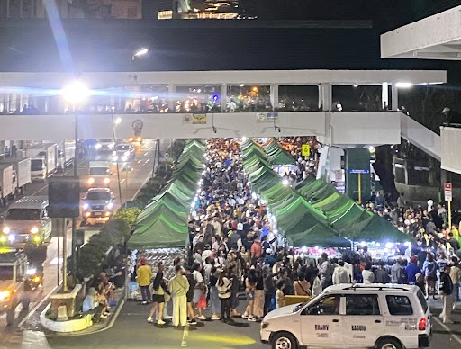
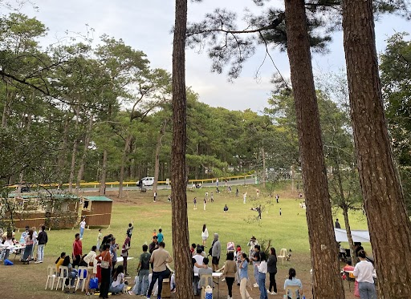
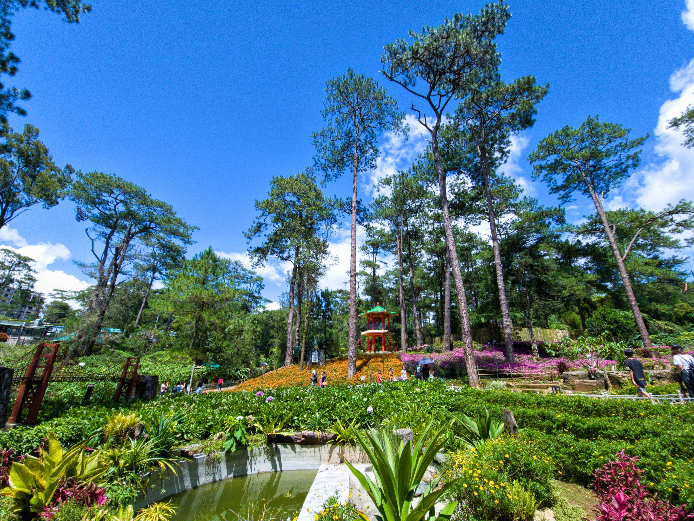
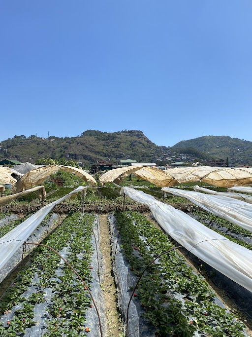
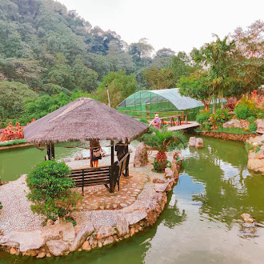

Nestled in the Cordillera mountains at 1,500 meters above sea level,
Baguio City offers cool breezes, lush pine forests, and a rich tapestry of culture and nature to explore.
1,500m Elevation
18°C Avg. Temp
50+ Attractions
Top Attractions in Baguio

Night Market
- The Baguio Night Market is famous along Harrison Road.
Burnham Park
- A relaxing park with a lagoon and greenery.
Mines View Park
- Famous for mountain views and scenic landscapes.

Camp John Hay
- Great for nature walks and relaxing trails.

Botanical Garden
- A serene garden showcasing local flora and Igorot culture.

Strawberry Farm
- Pick fresh strawberries at La Trinidad Valley farm.

BenCab Museum
- World-class art museum by National Artist Ben Cabrera.
Wright Park
- Horse riding and pine-tree lined paths near The Mansion.
Baguio Night Market
Location: Harrison Road, Baguio City
Open: Every night, 10:00 PM – 2:00 AM
About: The Baguio Night Market stretches along Harrison Road and is one of the most beloved local experiences in the city. You'll find secondhand clothes (ukay-ukay), local street food like taho, kwek-kwek, and isaw, as well as handcrafted souvenirs and accessories at very affordable prices. It's lively, colorful, and full of local charm.
Tips: Bring cash, wear comfortable shoes, and arrive early to get the best picks. Watch your belongings in the crowd.
About: Burnham Park is the central park of Baguio City, designed by American architect Daniel Burnham. It features a man-made lagoon where visitors can rent boats, a flower garden, rose garden, bike rentals, and open picnic areas. It's a favorite of both locals and tourists for morning jogs and family outings.
Tips: Rent a bike and ride around the park. Visit the Rose Garden in the morning when flowers are freshest.
About: Mines View Park overlooks the old mining town of Itogon and the Cordillera mountain range. The park is lined with souvenir shops selling woodcrafts, silver jewelry, and Baguio ref magnets. Visitors can also dress up in traditional Igorot attire and take photos. On clear days, the mountain view is absolutely stunning.
Tips: Go early in the morning for the clearest views before the mist rolls in. Bargain politely at the souvenir stalls.
About: Camp John Hay is a former American military rest and recreation facility now transformed into a forest reserve and leisure destination. It features pine-forested trails, a golf course, the historical Bell House, restaurants, and a cemetery of negativism. It's one of the best places to breathe fresh pine air and enjoy nature walks.
Tips: The forest trails are free to walk. Grab a coffee at one of the cafes inside and enjoy the cool air surrounded by tall pine trees.
About: Baguio's Botanical Garden is a peaceful green space that celebrates both the natural beauty of the region and the indigenous Igorot culture. You can find life-sized Igorot village displays, native plant collections, and quiet walking paths. Traditional dances are sometimes performed here for visitors.
Tips: Entrance is free! It's a great stop for a quiet morning walk. Look for the native huts that demonstrate traditional mountain province architecture.
About: The La Trinidad Strawberry Farm is one of the most popular side trips from Baguio City. Visitors can walk through rows of strawberry plants and pick their own fresh berries. Strawberry jam, taho, and fresh strawberry juice are sold on site. The farm is especially lush from December to May.
Tips: The picking season peaks from January to March. Wear shoes you don't mind getting muddy and bring a small container for your picks.
About: The BenCab Museum is a world-class art museum dedicated to the works of National Artist Benedicto Cabrera (BenCab) and other Filipino artists. The museum is built into a hillside surrounded by lush gardens and a small lake. It also features a café with a scenic view and an indigenous art collection. It's one of the top cultural destinations in the Philippines.
Tips: Allow at least 2–3 hours to fully explore. The outdoor garden and lake area are just as beautiful as the galleries inside.
About: Wright Park is a wide open field famous for horseback riding, located right beside The Mansion — the official summer residence of the Philippine President. The park features a long reflecting pool lined with tall pine trees, making it one of the most scenic spots in Baguio. Horse rentals are available for a fun ride around the area.
Tips: Try horseback riding early in the morning. Don't forget to visit The Mansion gate nearby for a great photo opportunity.